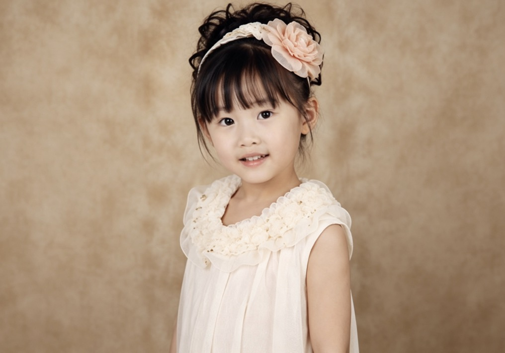
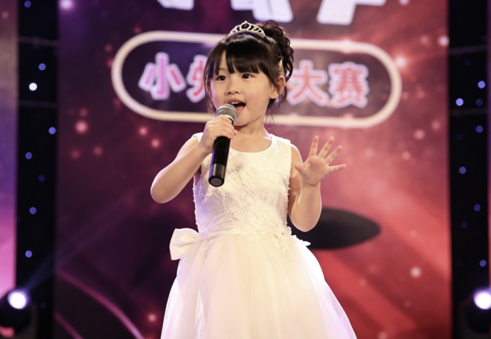
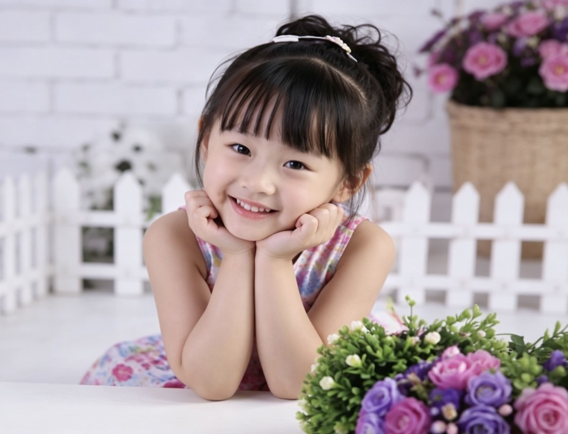

基本信息

中文名
林苗苗
艺名
苗苗
国籍
中国
出生地
江州市城关区
居住地
江州市望月区
出生日期
2007年8月15日
星座
狮子座
职业
演员、广告模特
毕业院校
江州市艺术中学
代表作品
《妈妈的便当》
《小尾巴》
《小尾巴》
活跃年代
2014年至今
苗苗（2007年8月15日—），本名林苗苗，中国内地女童星、演员。因2014年出演公益微电影《妈妈的便当》中的“小月”一角进入大众视野，凭借自然灵动的表演被网友称为“治愈系小天使”。
早年经历
苗苗出生于江州市城关区，后随家人迁居至江州市望月区。父亲林方是电视剧导演，母亲杨苗是话剧演员。受家庭熏陶，3岁起学习儿童舞蹈与朗诵，4岁被星探发掘拍摄首支商业广告。
幼儿园期间多次参加市级少儿才艺大赛，获江州市“未来之星”幼儿组朗诵金奖。

图：苗苗在江州市少年才艺大赛上的舞台留影
演艺经历
2014年：通过海选出演公益微电影《妈妈的便当》，饰演留守儿童“小月”，片中的哭戏镜头被多家电视台报道。同年签约“童星梦工场”经纪公司。
2015年：参演都市剧《邻居家的姐姐》，饰演童年女主角。为某品牌儿童乳酸菌饮料拍摄的电视广告在央视少儿频道高频播出，知名度进一步提升。
2016年：主演儿童成长电影《小尾巴》，饰演倔强却善良的乡下女孩“草草”，获第12届华语青年影像论坛“最佳儿童演员”提名。

图：电影《小尾巴》中饰演“草草”的苗苗
2018年：在公益短片《星星的孩子》中饰演自闭症儿童，被中国儿童少年基金会授予“爱心小天使”称号。
2020年：因学业暂缓拍戏，仅参与配音工作与公益广告拍摄。
主要作品
参演电影
| 上映时间 | 电影名称 | 扮演角色 |
|---|---|---|
| 2018年 | 《星星的孩子》（短片） | 宁宁 |
| 2016年 | 《小尾巴》 | 草草 |
| 2014年 | 《妈妈的便当》 | 小月 |
参演电视剧
| 首播时间 | 剧名 | 扮演角色 |
|---|---|---|
| 2015年 | 《邻居家的姐姐》 | 童年安心 |
广告代言
- 某品牌儿童乳酸菌饮料（2015—2017）
- 某学习机（2016）
- 某少儿羽绒服（2017）
获奖记录
- 2015年 江州市“童星闪耀”少儿才艺大赛 最佳上镜奖
- 2016年 第12届华语青年影像论坛 最佳儿童演员提名
- 2018年 中国儿童少年基金会 “爱心小天使”称号
社会活动
2016年参与“为山区孩子送冬衣”公益活动；2018年录制关爱自闭症儿童公益歌曲《星星的歌》；2020年为抗击新冠疫情录制儿童洗手宣传短片。
个人生活
苗苗现与家人居住在江州市望月区，小学就读于望月区第一小学，文化课成绩优秀，擅长钢琴与书法。2021年进入江州市艺术中学表演专业学习。业余时间喜欢阅读和滑冰，养有一只柯基犬。